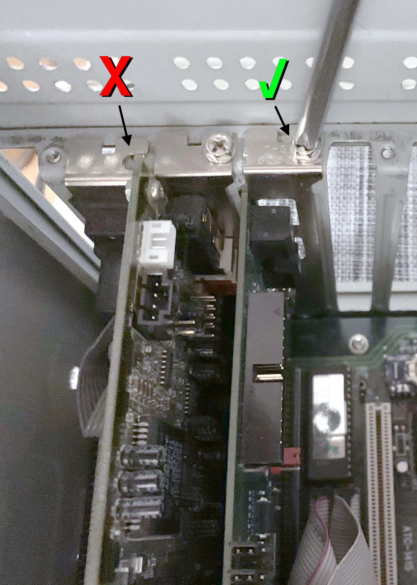
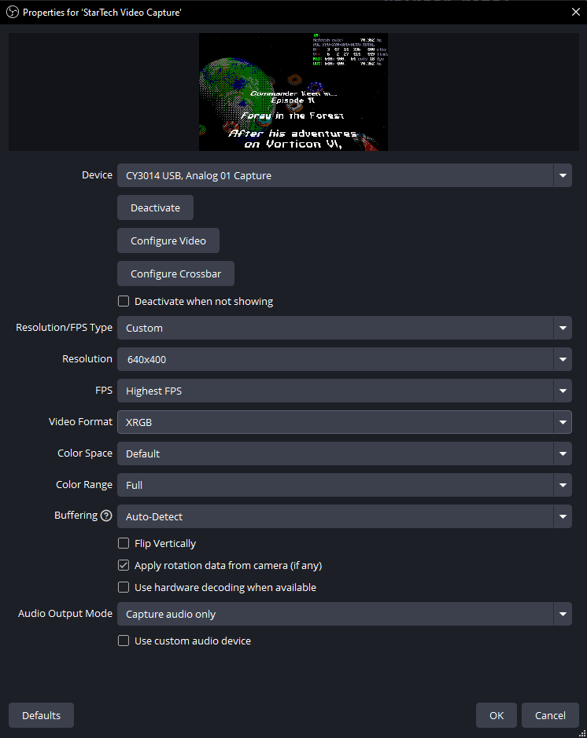
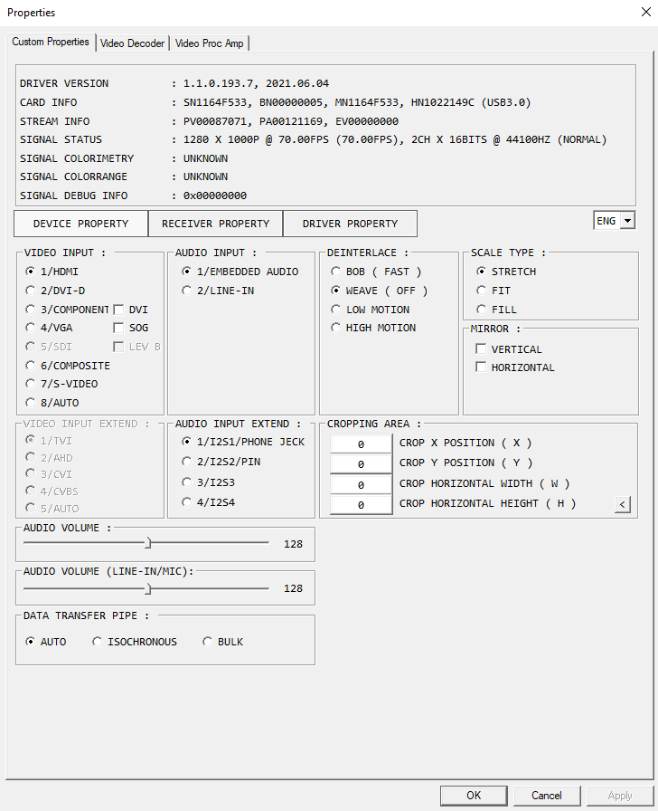

Introduction
CRT Terminator Digital VGA Feature Card ISA 1000 is an 8-bit ISA expansion card that works on IBM PC compatibles all the way from the original IBM XT PC up to the hybrid ISA + PCI Pentium era motherboards.
The CRT Terminator board is an expansion card, which means that it does not function as a standalone display adapter. Instead, like the early MPEG decoder cards from the 90s, CRT Terminator leverages an existing VGA-compatible adapter, and connects into the VGA Feature Connector bus of the VGA card via a 2x13-pin ribbon cable.

This VGA Feature Connector bus bypasses the signal degrading digital-to-analog video conversion step (RAMDAC), and enables CRT Terminator to output a fully digital video signal. CRT Terminator converts and upscales this 8-bit palettized digital video into a True Color 24-bit RGB DVI-D output stream that is compatible with HD video on modern flat panel displays.
Two landmark features of CRT Terminator are Multimode and StutterStop. The Multimode feature enables CRT Terminator to be aware of many of the various nonstandard and quirky sized custom VGA video modes that DOS programs utilize, and whenever the VGA output video mode changes, CRT Terminator will readjust its video processing to produce a best matching upscaled resolution. That is, instead of outputting a single fixed output resolution, CRT Terminator will output multiple different video modes depending on the video input content.
Then, in coordination with the target display's upscaling circuitry, CRT Terminator is able to provide an upsampling result that closely resembles "surface area-based" upsampling, which provides vastly superior image quality of scaled up pixel art, compared to point sampling or bilinear filtering alone. For more information, see the later section 8. Video Upscaling with CRT Terminator.
The StutterStop feature is a unique hardware feature that carefully matches the vertical refresh rate of the upscaled video with that of the input video, down to the millihertz level. This ensures that the video upscaling subsystem will exhibit frame stuttering only on the order of once per several minutes, or even more infrequently. This eliminates the presence of any periodic stuttering that is commonly observed in panning motion of video (assuming no stuttering was present in original produced video from the PC).
Enabling Multimode and StutterStop features require some level of nonstandard video mode support from the flat panel display. To allow for most degree of flexibility, CRT Terminator also provides the ability to normalize quirky video modes and output CVT and DMT compliant video signals as a fallback. These features are optionally activated via configuration switches, and we provide tables of our findings for compatibility.
In all cases, the degraded analog video output from the VGA adapter RAMDACs is bypassed. We find that even some of the oldest ISA VGA cards with a reputation of having an unusably blurry or soft analog video quality, such as ATI 28800 and Oak 037, gain a new life and are able to produce a crispy clear digital video output.
Thus the end result is a high quality digital video output with few compromises when viewed on a modern display.
Requirements
CRT Terminator requires the following:
- an IBM compatible PC, with a free 8-bit ISA slot for the CRT Terminator card,
- a VGA graphics adapter on the ISA or PCI bus that is equipped with either an
- 8-bit IBM VGA Feature Connector: a 2x13-pin edge connector shaped Feature Connector bus, or
- 8-bit VESA Standard VGA Pass-Through Connector (VSVPC, also called just VESA Feature Connector): a 2x13-pin flat cable pin header Feature Connector bus, with video output functionality.
- a flat panel display or video capture card with DVI-D compatible HD video input
- a passion for retro computing
Note: some VGA graphics adapters may require running a utility program from the adapter manufacturer to enable video output on the Feature Connector bus. (e.g. some variants of the S3 Trio 64)
Also, on some VGA adapters, such as the Voodoo 3, the Feature Connector on the board seems to only work for video input (as far as we are aware of at the time of writing), and unfortunately cannot be used to output video to CRT Terminator.
At the time of writing, we do not yet have good experience with the compatibility of different ISA VLB adapters, so we do not state these as supported yet. We recommend either using a ISA or a PCI graphics card.
Also, even though many AGP graphics cards have a VESA Feature Connector, it is unclear if any of these connectors can be used as output - at least in our testing we have not been able to output video from any. AGP graphics cards are currently not supported.
Technical Features
CRT Terminator offers the following features:
- outputs a DVI-D video signal (no audio) via the HD video receptacle.
- supports input video mode pixel clocks up to 37.5 MHz.
- supports output video mode pixel clocks up to 118.8 MHz (max FPGA vendor rated speed) and up to 75 Hz vertical refresh rate.
- overclocking support for unlocking output pixel clocks above 118.8 MHz.
- supports upscaling up to 1600x1200@57.4hz in CVT-Reduced Blanking v2 mode for pixel perfect 4:3 upscaling of DOS 320x200 and 320x240 input resolutions, for output on 1600x1200 and 1920x1200 displays.
- supports upscaling to 1440x1080@70hz in CVT-RBv2 mode (118.8 MHz) for output on 1920x1080 displays.
- supports all standard CGA, EGA and VGA input video modes with 2, 4, 16 and 256 colors.
- supports Super VGA input modes up to 800x600 resolution with up to 256 colors.
- implements a precisely synchronized 8-bit palettized video to 24-bit RGB video conversion.
- provides a robust video synchronization subsystem for various nonstandard quirky and hacked VGA video modes.
- normalizes quirky input video in various ways to make it more compatible with limitations of modern displays, most notably:
- ensure ≳ 28 kHz horizontal refresh,
- frame decimation to ensure ≤ 75 Hz vertical refresh,
- clock doubling to ensure ≥ 640 pixels horizontal width,
- smart upscaling to ensure pixel width > pixel height,
- removes malformed video shape, such as negative horizontal or vertical porch area
- supports intelligent detection and cropping of CGA/EGA/VGA video borders.
- enables single- and triple-buffered video upscaling for controlling output latency.
- provides three different video upscaling modes: Passthrough, Fixed Resolution and Multimode:
- Passthrough mode outputs the input video signal unscaled with minimal processing, and less than a single scanline of processing latency.
- Fixed Resolution mode upscales the input video for fast video mode switching and capture card compatibility.
- Multimode output upscales the input video for best output quality from all input modes.
- supports configuration via a DOS command line utility.
- supports standard VGA 262,144 colors 6:6:6 256-color palettized modes as well as a new expanded 16 million 8:8:8 256-color palettized mode of operation.
- operation implemented using Gowin GW1NR series of FPGA board.
- ... and many more features ...
all packed into a single 8-bit ISA expansion card!
Installation
This section details the steps to install CRT Terminator.
Installing The CRT Terminator Card
CRT Terminator is an 8-bit ISA card, but may be freely installed in either an 8-bit ISA slot or a 16-bit ISA slot.
However, installation in "Slot 8" of the original IBM XT PC (the slot closest to the Intel CPU) is not supported due to limitations of that slot.

Be sure to fully screw in the CRT Terminator backplane to the chassis. This may seem a bit silly to point out, but since a part of CRT Terminator configuration will be done by flipping DIP switches at the back of the card, it is all too easy to accidentally unseat the card if flipping the switches while the card is not screwed in. Unseating the card during power-on could cause damage to the Feature Connector subsystem or the PC.
Bundled with the adapter are both styles of video cables for connecting CRT Terminator to the Feature Connector slot of your graphics card.
Installing The Video Cable To IBM Feature Connector
If you have an earlier ISA VGA graphics card that predates VESA standardization, it should have the IBM edge connector style Feature Connector interface.
This interface should be keyed with a notch cut out between pins 2 and 3. Pin 1 is always on the narrow side of this connector, like this:
To connect to this IBM style edge connector, the CRT Terminator video cable with a female edge connector socket is used:
Connecting the cable to the CRT Terminator end is easy, because there is only one orientation that the cable fits. This orientation identifies which side of the cable will be Pin 1:
Due to manufacturing source, the side of the cable itself might not be colored to mark pin 1. So double check the pin 1 markers on the connectors to identify pin 1.
On the edge connector end, there will be similar markings as follows:
The connection on the VGA card is made as follows:
Be sure to fully push in the connector. (in the above image, the connector is shown seated only half-way to illustrate the position of the notch)
Make sure you positively identify pin 1 on both the cable and the VGA card when installing.
Installing the cable in incorrect orientation may damage the VGA card, CRT Terminator, PC and/or the PSU. Any damage resulting from incorrect installation will not be covered. So please be very careful to identify the correct cable orientation.
Installing The Video Cable To VESA Standard VGA Pass-Through Connector
If your VGA adapter is of a newer type (~1990-1991 and later), then it is likely to have the VESA Standard VGA Pass-Through Connector (VSVPC). This connector is colloquially also referred to as the VESA Feature Connector.
For more information on this connector, see Appendix B.
This connector is a 2x13 pin grid male pin ribbon header connector, as seen below:
Use the following video cable to connect CRT Terminator to your VGA adapter with a VSVPC connector:

This cable is symmetric, you can plug either end to the CRT Terminator.
Connecting the cable to the CRT Terminator end is easy, because there is only one orientation that the cable fits. This orientation identifies which side of the cable will be Pin 1:
Note that the 2x13 pin VSVPC connector on the VGA adapter is unkeyed. That is, it is possible to connect the video cable to this connector incorrectly, rotated 180 degrees.
To avoid damaging the VGA card, CRT Terminator, PC and/or the PSU, take extra care to correctly locate and match pin 1 on both the cable and the VGA adapter board, like so:
If this cable is connected 180 degrees reversed in incorrect orientation, the high-speed video data pins will overlap with ground pins, potentially causing a short.
Any damage resulting from incorrect installation will not be covered. So please be very careful to identify the correct cable orientation.
If there is any doubt to the correct pin 1 orientation on the board, we strongly recommend using a multimeter to identify the ground pins on the VGA board as a means to double-check the correct installation orientation for the cable.
Warning! Even though VESA did standardize a common orientation and placement for the VSVPC connector for VGA cards, some VGA adapter vendors chose for no apparent reason to lay out the connector in a 180 degrees rotated orientation on the board. So be sure to check the orientation on each VGA adapter separately, instead of assuming a common orientation.
The VGA Terminator Dongle
Many older graphics adapters have an autodetection feature that identifies whether the currently connected display is a monochrome or a color monitor. This is done by identifying resistance on certain pins of the video output cable.
If no VGA video cable is connected, these adapters may boot up in monochrome mode, resulting in displaying grayscale colors also via the Feature Connector.
If you are not using any VGA monitors alongside CRT Terminator (e.g. in dual display or video capture setup) and your video output comes out monochrome, we will need to fool the VGA adapter into thinking that a color monitor would actually be connected.
To achieve this, the VGA terminator dongle was created. This dongle is a dummy block that attaches in the VGA output, and provides the needed identification to the graphics card to think it should output a color image.
This small terminator dongle is actually what gave CRT Terminator the idea for the name.
Just attach it at the end of the VGA adapter, like so:
If your VGA adapter provides color output even without the terminator dongle, or you want to use the VGA output for other purpose, then you can just leave the dongle in the box.
Configuration
CRT Terminator is configured via three different mechanisms:
- 6+1 jumper settings on the board (J1 through J7)
- 2x4 DIP switches at the back (DIPs 1.1-1.4 and 2.1-2.4)
- Software configuration using a supplied DOS real-mode utility
The jumper settings are used to configure CRT Terminator behavior with respect to the VGA adapter, i.e. they need to be reconfigured if changing to a different VGA adapter.
The DIP switches are used to configure CRT Terminator behavior with respect to the LCD display or video capture device that it connects out to. When changing the output device, these DIP switches will need to be reconfigured.
Finally, the software configuration is used to tune the behavior with respect to different software at runtime.
Jumper Settings
There are seven jumpers on the CRT Terminator DV1000 board. Jumpers J1-6 are located at the top edge of the card for easy access, whereas J7 is located on the board itself. The functionality of these jumpers are summarized in the following table.
| Jumper settings J1-J7 |
Name |
Description |
| J1 | Reserved | Currently unused. Please set to 1-2 (N/C). |
| J2 | Automatic Video Sampling Phase Detection | Controls whether CRT Terminator will automatically analyze Feature Connector video sampling phase.
1-2 (N/C): Enabled. State of jumpers J3-J6 will be ignored.
2-3: Disabled. Sampling Phase will be manually defined by jumpers J3-J6. |
| J3 | Pixel Data Sampling Phase | Configures the sampling phase that video Data bits are sampled at.
1-2 (N/C): Sample at rising edge of pixel clock.
2-3: Sample at falling edge of pixel clock. |
| J4 | Display Enable Sampling Phase | Configures the sampling phase that video Display Enable line is sampled at.
1-2 (N/C): Rising edge. 2-3: Falling edge. |
| J5 | Vsync Sampling Phase | Configures the sampling phase that video Vsync line is sampled at.
1-2 (N/C): Rising edge. 2-3: Falling edge. |
| J6 | Hsync Sampling Phase | Configures the sampling phase that video Hsync line is sampled at.
1-2 (N/C): Rising edge. 2-3: Falling edge. |
| J7 | Overclocking | Enables generating output video clocks beyond the manufacturer rated specification.
1-2 (OFF): Overclocking Disabled.
2-3 (ON): Enable overclocking. |
Jumpers J1-J6 utilize a three pin scheme to define two different states. State 1-2 ("open", or jumper not connected, N/C above) is set when a jumper bridges the two pins closest to the board PCB. State 2-3 ("closed") is set when a jumper bridges the two pins farthest from the PCB.
It turns out that different VGA adapters utilize different sampling phase conventions for the generated Feature Connector video signal. There was no VESA standard for this (although sampling at the rising phase seems to be most common), and it looks like the correct sampling phase may substantially drift even between different video modes on the same VGA adapter, especially on the older ISA video adapters.
Jumper J2 is used to enable a simple automatic configuration of the sampling phase settings. In this mode, CRT Terminator will continuously analyze which sampling phase it should use for each signal line. It is recommended that this option is enabled (J2 set to 1-2) first to see if this simple automatic scheme will work. The other options are available in case this automatic configuration does not work as expected for a particular VGA adapter.
An incorrect video sampling phase setting typically manifests as a video signal that geometrically drifts or jitters, or continuously loses video sync.
Jumper settings J3-6 enable manually configuring the appropriate video signal sampling phases to use. In order for these jumpers to take effect, jumper J2 must first be set to state 2-3.
Jumper setting J7 unlocks the display output frequency pixel clock limit. The maximum rated output provided by the FPGA board that CRT Terminator uses is a 118.8 MHz pixel clock. If J7 is set to state 1-2: OFF, then CRT Terminator will adhere to this specification, and will always generate a display signal that does not exceed this limit.
If J7 is set to 2-3: ON, then CRT Terminator will ignore this specification, and always attempt to generate the best ideal output clock speed for the display. There is no guarantee that this will produce a stable output video signal however.
Note that enabling overclocking will not void the warranty of CRT Terminator. Feel free to play around. The maximum rated pixel clock speed for DVI-D cables is 165 MHz, which gives a theoretical ceiling as to how fast pixel frequencies might be able to work.
DIP Switches
The back of CRT Terminator looks like follows:
A total of eight DIP switches, organized in two DIP boxes are present.
The first DIP box next to the video output connector contains four switches named 1.1, 1.2, 1.3 and 1.4. The values of these four switches are interpreted as a 4-bit binary number, and this number selects the output video mode.
| DIP switches 1.1-1.4 |
Resolution |
| Decimal |
Binary |
|
| 0 | 0000b | Passthrough |
| 1 | 1000b | 640x480 |
| 2 | 0100b | 800x600 |
| 3 | 1100b | 960x720 |
| 4 | 0010b | 1280x720 |
| 5 | 1010b | 1024x768 |
| 6 | 0110b | 1200x900 |
| 7 | 1110b | 1280x960 |
| 8 | 0001b | 1280x1024 |
| 9 | 1001b | 1364x1024 |
| 10 | 0101b | 1400x1050 |
| 11 | 1101b | 1680x1050 |
| 12 | 0011b | 1440x1080 |
| 13 | 1011b | 1920x1080 |
| 14 | 0111b | 1600x1200 |
| 15 | 1111b | 1920x1200 |
In the DIP switch box, a switch that is flipped down (as indicated by the text ON↓ on the box) denotes a binary 1, and a switch that is flipped away (↑) denotes a 0.
The bits are concatenated into the above table from DIP 1.1 to 1.4, left to right.
For example, the image on the right corresponds to a state 0111b, or decimal 14, or an output video mode of 1600x1200.
The value 0000b selects Passthrough mode. In this mode, CRT Terminator bypasses its video upscaling subsystem (except to normalize scandoubled VGA from e.g. 320x400 to 640x400 and to crop the VGA border) and outputs the input video signal unscaled to the display.
Passthrough mode is useful for enabling the lowest possible latency output from CRT Terminator. Some flat panel displays support the oddball video timings generated by CGA/EGA/VGA video modes better than others, so there is a bit of YMMV at play when using it.
If any other value than Passthrough is selected, then a given Resolution in the above table is chosen. The exact meaning of this selected resolution depends on the state of DIP2.1 switch, see the next table.
| DIP switches 2.1-2.4 |
Description |
| DIP 2.1 | OFF: Output Fixed Resolution
ON: Output Multimode |
| DIP2.2=OFF | DIP2.3=OFF | StutterStop level 0: Disabled. Output fixed 60Hz |
| DIP2.2=ON | DIP2.3=OFF | StutterStop level 1: Sync pixel clocks |
| DIP2.2=OFF | DIP2.3=ON | StutterStop level 2: Level 1 + sync vertical porch |
| DIP2.2=ON | DIP2.3=ON | StutterStop level 3: Level 2 + sync horizontal porch |
| DIP 2.4 | OFF: Disable Developer UI
ON: Show Developer UI |
In Passthrough mode, the values of DIP switches 2.1, 2.2 and 2.3 have no effect. That is, Multimode and StutterStop do not apply in Passthrough mode.
Fixed Resolution Output:
If DIP 2.1 is OFF, then the resolution selected by DIP 1.1 - 1.4 denote a fixed output resolution. In this mode, CRT Terminator will always output this specific chosen resolution, using point sampled upscaling.
Use this mode to maximize compatibility of CRT Terminator with picky monitors or video capture cards.
Multimode Output:
If DIP 2.1 is ON (and not running in Passthrough mode), then the resolution selected by DIP 1.1 - 1.4 denote a maximum upscaled output resolution. In this mode, CRT Terminator will dynamically adjust the output resolution based on the current resolution of the input.
This way, for example when playing a Pinball game that uses a custom video mode, the video output will look crisp and well upsampled both in-game and in menus, without needing to manually re-adjust any video output parameters when navigating the game menus.
StutterStop Level
When not operating in Passthrough mode, DIP switches 2.2 and 2.3 select a two bit binary number that activates the StutterStop feature of CRT Terminator.
The StutterStop feature tunes the output refresh rate of CRT Terminator so it best matches the input video rate, even when processed through the video upscaling circuitry.
If both DIPs are OFF (value of 00b), StutterStop is disabled, and CRT Terminator always outputs 60Hz video, even if the input video was e.g. 70 Hz like in DOS VGA video.
If StutterStop is set to any other value, Level 1-3, then StutterStop is enabled. The StutterStop "level" indicates the fine-grainedness or aggressiveness of the video rate matching. Level 3 is most preferable, and we find that many modern displays are compatible with it. (such as ASUS ProArt PA248QV and Philips Brilliance 252B9/00 that we recommend)
However, if the video display is unable to sync e.g. StutterStop Level 3 mode, you can try to run in Level 2 or Level 1 instead, to achieve at least some level of video frame rate matching.
VGA Palette Snoop
In order to enable support for CGA, EGA and VGA video modes (as they are palettized), CRT Terminator snoops the ISA I/O bus to observe the palette write commands as they arrive to the VGA adapter. The term snooping here means that CRT Terminator listens to the communication that takes place on the ISA bus between hardware peripherals, and it recognizes all palette color writes to the hardcoded VGA adapter palette I/O port addresses 3C8h and 3C9h from the PC CPU. With that information, CRT Terminator is then able to recreate the needed palette color entries to convert palettized video into 24-bit RGB.
In particular, this means that the I/O bus configuration on the PC must support this kind of "palette snooping" from the ISA bus, or otherwise palette information will not be observed and colors will come out incorrect.
If you are running a PC setup with a VGA adapter residing on the 8-bit or 16-bit ISA bus, then palette snooping will always be enabled and no further configuration is needed. This is because electronically, the ISA bus is an unswitched I/O hub: all peripherals physically observe all communication on this bus.
If you have an ISA VLB or a PCI video adapter, then the situation is a little bit more complicated. Both of these peripheral buses are switched, and disconnected from the ISA bus, so an explicit solution is required for CRT Terminator to be able to snoop the palette writes. There are four options:
PCI Standard VGA Palette Snoop:
If your VGA adapter is PCI-based, there exists a register bit in the PCI standard to enable PCI palette snoop on the VGA card. This register bit needs to be flipped once at system startup, e.g. in AUTOEXEC.BAT. The SNOOP.EXE configuration utility ([GitHub] [Download ZIP]) can do this.
On one rare VGA card, the Diamond Speedstar 64 CL-GD5434, we observe a quirky VGA firmware bug that the card resets the PCI palette snoop setting on each video mode change. For this specific VGA adapter and others that possibly behave like this, we provide a TSR utility PCITSR.EXE ([GitHub] [Download ZIP]) that keeps the PCI palette snoop register latched to be force-enabled.
BIOS VGA Palette Snoop:
If the motherboard supports a "ISA VGA Palette Snoop" option in the BIOS, then that feature can be used to solve the issue. With this option enabled, the motherboard will post all palette writes to the PCI bus also onto the ISA bus, which allows CRT Terminator to follow all modifications to the VGA palette.
VGA Card Specific Palette Snoop:
Reading the datasheets of some PCI and ISA VLB graphics chips, they provide a built-in programmable option to enable passing through the palette writes from the adapter. The idea with this option is to program the PCI/ISA VLB VGA adapter to stop acknowledging VGA palette write commands back to the CPU. This will cause the CPU to continue propagating these palette write I/O operations onwards to, first in the PCI hub, and then finally reaching the ISA hub as a final destination, where CRT Terminator will then be able to snoop the writes. This requires a hardware configuration support in the VGA adapter, and a software driver that programs the VGA adapter to enable this passthrough.
Software TSR Palette Snoop:
Finally, if there is no configuration option available either in BIOS or with the VGA adapter itself, the last resort may be to revert to utilizing a software polling approach. CRT Terminator provides a DOS software TSR program PALTSR.EXE ([GitHub] [Download ZIP]), which periodically polls the VGA palette, and then mirrors the palette over to CRT Terminator I/O address space. This software TSR may not be compatible with all DOS VGA programs, and will cause a small performance penalty, but on fast systems the performance impact may be unnoticeable.
Note: On PCI and ISA VLB adapters, enabling palette snoop has a small but measurable performance impact on overall graphics performance on some games, e.g. -~4% score measured in Doom timedemo.
Software Configuration
In addition to the jumpers and DIP switches, some aspects of CRT Terminator are configured via software. These settings include:
- Enable/disable vsync: By default CRT Terminator runs triple-buffered. Disable vsync to lower input latency to perform video upscaling that does not synchronize to vertical refresh rate.
- Enable/disable VGA border crop: By default CRT Terminator removes the VGA border area to enable pixel-perfect video upscaling in modes like 320x200, 320x240 and 800x600. Disable the VGA border crop if you'd like to see the borders, at the expense of forfeiting pixel perfect upscaling.
Our software repository to configure CRT Terminator, and other utilities, can be found on the GitHub repository juj/crt_terminator.
Supported Input Video Modes
The following input video modes are supported:
| Standard |
Mode Number |
Resolution |
Refresh Rate |
Colors |
| CGA | 0h | 40x25 | 70hz* | B/W |
| CGA | 1h | 40x25 | 70hz* | 16c |
| CGA | 2h | 80x25 | 70hz* | gray |
| CGA | 3h | 80x25 | 70hz* | 16c |
| CGA | 4h | 320x200 | 70hz* | 4c |
| CGA | 5h | 320x200 | 70hz* | 4c |
| CGA | 6h | 640x200 | 70hz* | B/W |
| MDA | 7h | 80x25 | 70hz* | B/W |
| EGA | Dh | 320x200 | 70hz* | 16c |
| EGA | Eh | 640x200 | 70hz* | 16c |
| EGA | Fh | 640x350 | 70hz* | B/W |
| EGA | 10h | 640x350 | 70hz* | 16c |
| VGA | 11h | 640x480 | 60hz | B/W |
| VGA | 12h | 640x480 | 60hz | 16c |
| VGA | 13h | 320x200 | 70hz | 256c |
| VGA | Mode X | 320x240 | 60hz | 256c |
| SVGA | 58h,5Ch | 800x600 | 56hz | 256c |
| Nonstandard** | N/A | ≤ 800x600 | ≤ 70hz | ≤ 256c |
*On the original CGA and EGA adapters these were 60hz, but on VGA adapters these run as 70hz.
**CRT Terminator is very widely compatible with many custom video modes that programs from the DOS era utilized. We have tested hundreds of different known programs, games and demoscene demos with CRT Terminator to ensure as broad support as possible.
The maximum supported input video clock is 37.5 MHz. This is generally good for ~800x600@56 Hz, though some input video modes, like 800x600@60 Hz or 1024x768@60i Hz may also work, if you are lucky.
1024x768@60Hz progressive will not work, that is unfortunately beyond the possible speed of the Feature Connector bus (1024x768@60Hz is ~65 MHz pixel clock).
Additionally, CRT Terminator can be used to experiment with some 15bpp, 16bpp and 24bpp input video modes on some specific video adapters.
Recommended Displays
For best results, a display that supports Coordinated Video Timings - Reduced Blanking V2 standard (CVT-RBv2) is recommended. Further, a display that supports even tighter nonstandard video timings as well as arbitrary video resolutions is recommended in order to enable the use of CRT Terminator Multimode and StutterStop features.
Whichever monitor you are using, the output from DOS programs are almost always intended to be viewed in 4:3 aspect ratio. So using a display that supports a Force 4:3 aspect ratio scaling mode is highly recommended.
In the absence of such scaling mode, some monitors support a 1:1 aspect ratio mode. This aspect ratio mode, while not necessarily perfect in all cases, can be a decent fallback for many scenarios.
For best viewing results of content that uses 320x200 or 320x240 resolutions, we recommend acquiring a display with a 1920x1200 resolution that supports up to 75 Hz video and 4:3 aspect ratio control. This will enable frame rate precise crisp pixel perfect and aspect ratio preserved upscaling of input video.
Pixel peeping users who are seeking the best upscaling results for 640x480 resolution content specifically might want to entertain 1280x1024 sized displays with 4:3 or 1:1 aspect ratio control, for a 2x 640x480 → 1280x960 upscaling path, providing thin letterboxes at top and bottom.
Video Upscaling with CRT Terminator
This section describes the video upscaling strategy employed by CRT Terminator.
First note that CRT Terminator supports a Passthrough mode for use cases where upscaling is not desired. In Passthrough mode, minimal on-the-fly video normalization is performed without the use of a framebuffer (i.e. no added latency), to generate a video signal that many modern displays will hopefully be able to synchronize to.
However, Passthrough mode may have some drawbacks:
- If the modern display does not have a Force 4:3 Aspect ratio option, the video aspect ratio will not be faithful to original CRT 4:3, since old DOS CRTs displayed non-square pixels.
- A low DOS video resolution (320x200, 640x350, 720x400, etc.) may be something that a modern display might not understand to sync to.
- The bilinear-ish video upscaling algorithm used by a modern display might result in a soft/blurry image.
To help resolve these problems, CRT Terminator provides a video upscaling circuitry that uses a video framebuffer to upscale the input video.
The video upscaling circuitry in CRT Terminator can be utilized in two different modes: Fixed Resolution or MultiMode.
In Fixed Resolution mode, CRT Terminator upsamples the given input video signal to the given fixed output resolution using Point Sampling. The output resolution does not change depending on the input video resolution. This mode is useful for crispest video output, and for e.g. buggy USB video capture cards that get confused on video mode changes.
In MultiMode operation mode, CRT Terminator will upscale the input video by a multiple of an integer factor in both width and height. When viewed with a modern flat panel display's Force 4:3 Aspect ratio option, this produces an end result that is sometimes called "Surface-Area Sampling". This upsampling mode is generally superior to Point Sampling and Bilinear Filtering on low-resolution pixelated source content.
The effect of these different upsampling modes can be observed in practice below on a 320x200 input video signal, which is upsampled to 1440x1080 resolution to be viewed in 4:3 aspect ratio on a 1920x1080 display.
Original 320x200 video (zoomed up 5x in web browser for easier viewing, note the incorrect 16:10 aspect ratio)
|
Bilinear upsampling to 4:3 (Passthrough mode)
|
Point-sampled upsampling to 4:3 (Fixed Resolution mode)
|
Surface Area upsampling to correct 4:3 (MultiMode)
|
Click on the above thumbnails to pixel peep into the full images in 100% size.
When the effects of CRT Terminator video upsampling and flat panel display upsampling are combined, the different CRT Terminator operation modes produce different final results. The following table compares the pros and cons of the different modes:
Comparison of different CRT Terminator video upscaling modes.
| Mode |
Visual End Result |
Uses Framebuffer? |
Added Latency |
Output Video Mode? |
Output Aspect Ratio |
LCD Compatibility |
| Passthrough |
Like Bilinear Filtering - Smoothest |
No |
Microseconds |
Varies |
Varies. Use 4:3 mode on LCD. |
Nonstandard |
| Fixed Resolution |
Point Sampling - Crispest |
Yes |
1-2 frames |
Fixed if StutterStop is disabled |
Fixed 4:3 or 16:9. |
Standard DMT or CVT |
| MultiMode |
Like Surface Area upsampling - Balanced |
Yes |
1-2 frames |
Varies |
Varies. Use 4:3 mode on LCD. |
Nonstandard |
In general we recommend using MultiMode for best picture quality, and falling back to other modes for compatibility, subject to taste.
It is good to note that in the modes where input resolution changes trigger an output resolution change (Passthrough, MultiMode, and Fixed Resolution with StutterStop enabled), some LCD displays may take a couple of seconds to sync to the changed video mode. So, as an example, when playing Sierra's Black Cauldron or King's Quest, where switching between inventory and game views incur a video mode change, it may be better to use Fixed Resolution mode with StutterStop disabled, to avoid repeated slow video re-syncs. Some video capture boxes or recording software (such as OBS) may also have trouble with video frame rate changing during recording.
In video modes that use a framebuffer to upscale, single-buffering (vsync disabled, ~1 frame of latency) vs triple-buffering (vsync enabled, ~2 frames of latency) can be controlled in software with CRT Terminator configuration utility.
Pixel Perfect Upscaling DOS 320x200 games
Many vintage PC DOS games used the 320x200 pixels resolution. To illustrate the different upscaling modes from previous section, here is a closer comparison.
On a 1920x1080 display, upscale to 1440x1080 using Fixed Resolution mode.
|
On a 1920x1080 display, upscale to 1440x1080 using MultiMode scaling. (CRT Terminator will upscale to 1280x1000 for the LCD display to upscale to 1440x1080 in 4:3 mode)
|
On a 1600x1200 or a 1920x1200 display, upscale to 1600x1200 (using either Fixed Resolution or MultiMode operation). Lossless and pixel perfect on real display, video capture suffers from lossy 4:2:0 Chroma.
|
320x200 captured as Passthrough and upscaled to 1600x1200 in OBS. Lossless and pixel perfect.
|
Click on the individual images to load them up in full view.
Below is the same image, cropped and zoomed in for comparing closer details.
On a 1920x1080 display, upscale to 1440x1080 using Fixed Resolution mode.
|
On a 1920x1080 display, upscale to 1440x1080 using MultiMode scaling.
|
On a 1600x1200 or a 1920x1200 display, upscale to 1600x1200 (using either Fixed Resolution or MultiMode operation will yield the same result in this case) Lossless and pixel perfect on real display, video capture suffers from lossy 4:2:0 Chroma.
|
320x200 captured as Passthrough and upscaled to 1600x1200 in OBS. Lossless and pixel perfect.
|
Note that due to use of a lossy 4:2:0 Chroma StarTech video capture device, there is unfortunately a bit of chroma bleed on adjacent pixels in all of the above screenshots except for bottom right. That artifact is not present when viewed on a real LCD display. The image in bottom right shows how to use Passthrough mode to avoid lossy Chroma from degrading visual quality.
The first example (top left), uses Fixed Resolution upscaling to upsample the video when viewed on a 1920x1080 display. This produces the sharpest output when the output video size (1440x1080) is not an exact integer multiple of the input resolution (320x200). There will however be some amount of aliasing visible in games that display two-color dither/raster patterns.
The second example (top right), uses MultiMode upscaling to output the video to 1280x1000, for the LCD display to view in 4:3 1440x1080 mode. This is a great way to balance upscaling 320x200 video on Full HD displays. Note how individual pixels in two-color raster patterns appear evenly sized. (The zoomed up image shows up a bit more blurry than in reality due to 4:2:0 lossy Chroma video capture)
Which one to use depends on taste: Fixed Resolution provides sharpness, whereas MultiMode provides image quality.
For ideal no-compromises upscaling of 320x200 content, the third example (bottom left) shows how CRT Terminator upscales 320x200 input video to 1600x1200 when viewed on a 1200p capable output display. This upscaling is pixel perfect with zero smoothing/blurring. (any smoothing in the screenshot is due to 4:2:0 lossy Chroma video capture)
Using a 1600x1200 (or 1920x1200) display is ideal because that resolution is an integer multiple of popular 320x200, 320x240 and 800x600 resolutions.
Note that we do not recommend getting the popular vintage Dell 2007FPB 1600x1200 display. While it has the preferable 1600x1200 resolution, that display disappointingly does not support StutterStop.
Capturing CRT Terminator output for YouTube or Twitch streaming via OBS
Common use cases for CRT Terminator might be to record video footage from an old DOS PC for archival, video upload or live streaming purposes.
Since CRT Terminator uses a separate video output path from VGA, it is possible to simultaneously use a VGA display to view the analog video output while recording the digital video using a DVI-D video signal compatible USB/PCIe video capture device. E.g. one can play on a CRT at the same time while recording to a PC, without the need to use a separate video splitter.
Note however that some rare PCI VGA adapters have problems with handling the analog VGA palette output simultaneously while PCI palette snoop mode is enabled, so adapter specific oddities may occur.
We have tested a range of USB HDMI video capture devices for compatibility. Coarsely categorizing the results:
- The main observation is that Elgato HDMI video capture devices do not work at all. Avoid these devices. (The suspicion is that Elgato skimped on adding DVI-D video signal recording support)
- Cheap Amazon HDMI capture devices tend to work, but typically use Motion JPEG compression (MJPEG) in the recorded video, so video capture quality is not that great. Maximum recordable pixel clock speed (i.e. resolution * refresh rate) may be limited.
- The best video capture device we have found so far is this StarTech USB3HDCAP device, although it records lossy 4:2:0 Chroma, its drivers are somewhere from Windows 7 era and StarTech is no longer developing it, it seems. Sometimes disconnecting the device from USB or closing OBS causes a blue screen on Windows. The available recording bandwidth is great, enough to record all DOS video modes in Passthrough mode at 70 Hz, and other upscaled resolutions, such as 1600x1200 @ 60 Hz and 1440x1080 @ 70 Hz. Though there is not quite enough bandwidth to record 1600x1200 @ 70 Hz.
- One brand of video capture devices we have not been able to test, but are curious about, are the Magewell branded USB capture boxes. They are said to offer 4:4:4 Chroma recording support.
An example video capture of Mode 13h content, i.e. 320x200 @ 70 Hz, from an open source game mod Commander Keen in... "Goodbye, Galaxy!" Episode π: Foray in the Forest recorded in CRT Terminator Passthrough mode (640x400 @ 70.362 Hz) from OBS, upscaled to 1600x1200 is available here:

- Uploaded to YouTube: Commander Keen - Foray in the Forest - 1600x1200 @ 70.362 Hz.
- Direct download link without YouTube recompression: commander_keen_foray_in_the_forest_crt_terminator_1600x1200_70.362hz.mkv (file size: 229MB)
The Foray in the Forest mod contains patches to update Keen 4 to run at 70 fps, instead of the original 35fps that Keen 4-6 games were developed to run at. See juj/KEEN70HZ for more details about Keen refresh rate.
The next section outlines the OBS capture settings that were used to record this video.
General Video Recording Settings
In OBS, in File->Settings menu, there are two tabs, Output and Video that affect video recording. First, the Output settings were configured as follows:
These settings are not particularly specific to CRT Terminator, or vintage DOS PC recording. Video Encoding format was changed to modern NVENC (H.265) from the older H.264. Recording Quality was set to Indistinguishable Quality, Large File Size.
The settings in the Video tab were configured as follows:
In particular, the video canvas size was set to 1600x1200. This is a good resolution for recordings that aim for lossless 4:3 aspect ratio video output. Another good video canvas size for viewing on 1080p displays would be to set 1440x1080. That size would correspond to 4:3 aspect ratioed 1080 lines content.
The FPS value was set to precisely match the video output refresh rate that CRT Terminator states to be outputting. In this instance, it was 70362/1000 or 70.362 Hz. To see the CRT Terminator video refresh rate, either toggle the Developer HUD with the DIP Switch 2.4 at the back of CRT Terminator, or see if the HDMI Video Capture device you are using has a statistics window that displays this value.
Note that even if video refresh rate is set to precisely match the source content, this will not be a locked synchronization in OBS, and occassional frames can and will drop. It is a bit odd that OBS does not seem to support locking the recording refresh rate to the rate of an input video, so this is the closest approximation we found. However, the expected frame drop should occur less than 1/1000th of a Hz, i.e. approximately at most once every 1000 frames, in this case at most every 14.2 seconds.
It should be noted that recording with "odd" refresh rates like this make sense only if viewed on a high refresh rate display. For example, viewing 70Hz video on a 60Hz display is not much different from viewing 60Hz recorded video in the first place. However, when viewing 70Hz video on a high refresh rate gaming display, e.g. a 144 Hz, 240 Hz, 360 Hz or higher, video playback frame stuttering mismatches are minimized.
If recording video for playback at YouTube or streaming to Twitch, it is probably better to record the standard 60 Hz rate in the OBS settings instead, and let OBS frameskip the recorded 70 Hz content.
Video Capture Device Settings
The general video capture settings can be accessed via a Properties window:

The StarTech USB3HDCAP capture device is 4:2:0 Chroma lossy, but fortunately if the video capture is done at exactly 2x the resolution of the original video, the Chroma loss is hidden. Setting CRT Terminator to Passthrough mode will do exactly this for DOS 320x200 mode, i.e. the video will then output at 640x400 resolution, and at original refresh rate.


For USB3HDCAP specifically, it is important to set Resolution/FPS Type to Custom, and then set Video Format to XRGB, or otherwise OBS/USB3HDCAP will apply some kind of own "extra" Chroma loss to the output (we thought Chroma loss in uncompressed/raw video would be idempotent, but apparently the effect does cumulate somehow in OBS). Setting Video Format to XRGB was critical for USB3HDCAP to get a lossless pixel perfect recording.
Unfortunately OBS has a bit awkward UI quirk that setting Video Format to custom then requires that one manually also configures the recording Resolution. There is no way to just say "record whatever input resolution is coming in, but as XRGB." So this was set manually to 640x400. Getting the recording resolution exactly right is critical for pixel perfect captures.
Source Transform Settings
Finally, there are two important settings to adjust for recording pixel art content from DOS.
The first is the Source Transform setting:
Here the Size parameter was set to match the 640x400 video input size, but the Bounding Box Size was set to match the 1600x1200 video output size.
These configurations ensure that OBS will stretch the source video over the 1600x1200 canvas.
Scale Filtering Settings
Finally, to ensure that the video upscaling to 1600x1200 will take place with the pixelated image look, the Video Scale Filtering options were changed to Area mode. This implements surface-area upsampling, which provides great quality output that does not blur like bilinear filtering does. In this specific case (upscaling 320x200 video that is upscaled to 640x400, and then upscaling that to 1600x1200) setting between Area and Point shouldn't matter, and should give identical result. Although in other upscaling scenarios, we prefer the Area mode.
It is worth testing how the other settings here look like, subject to taste.
Lossless and pixel perfect 70 Hz video capture using VirtualDub
If OBS is giving trouble, it makes sense to compare against other video capture software.
In this section, one such software, the old "trusted" VirtualDub is tested. This was a great power tool in the 2000s. It is no longer actively developed (last version is from 2014), but it does support somewhat "raw" video capture from any Windows driver compatible acquisition device.
VirtualDub does not support "modern" live compression of video, so the footage it captures gets enormous quickly. However, given a large enough hard drive and the FFmpeg command line utility, one can use this toolset as a proof of concept at least to show that making lossless pixel and frame rate perfect video captures of DOS content with CRT Terminator is possible.
To illustrate, here are two recordings made with a Cyrix 486 PC -> Hercules Stingray Pro (ARK1000PV) -> CRT Terminator -> USB3HDCAP -> VirtualDub 1.10.4 (x64) -> FFmpeg workflow.
Pinball Fantasies
One of the legendary pinball games on DOS, Pinball Fantasies implements a custom nonstandard video resolution. CRT Terminator recognizes this video mode, and normalizes it to a 400x350 frame to preserve aspect ratio as close as possible and retaining pixel perfect upscaling. To avoid USB3HDCAP lossy 4:2:0 Chroma, video was upscaled to 800x700 using CRT Terminator's MultiMode feature. StutterStop was enabled to Level 3. Refresh rate for the game on the test system was 71.200 Hz.
Here are the settings used to produce the VirtualDub capture.
1. Set Video -> Preview to Progressive - both fields.
2. Set Video -> Capture Pin... settings for RGB24 color space, match the output size to "800x700 default" (it seems that in VirtualDub the default is 640x480, so one needs to change this to the correct resolution that has the text default), and then as a quirk, set the Frame Rate to the specific frame rate of the video input. In this case 71.200.
Note: In this dialog, after typing in the frame rate, do *not* click on Apply or change any other settings, or the input video rate will revert back to 60. The compression/quality settings should not matter here since there is no actual compression done. Click directly on OK.
3. Set Audio -> capture device to Line In, and feed game audio through PC motherboard's Line In input. CRT Terminator does not provide audio.
4. Go to Capture -> Settings... and enter the video frame rate (in this case 71.200) again. Do not click on the "round to nearest millisecond" button.
Note: For some reason, one needs to specify the recording frame rate to both VirtualDub and OBS. There is no possibility to say "capture locked to the input video stream frame rate" as far as we can tell. So when one specifies e.g. a capture refresh rate of 71.200 Hz to VirtualDub or OBS, even when the input video is a matching 71.200 Hz, there can and will still be some occassional frames dropped (even if these drops will come at a rate less than 1/1000th Hz). This is because realistically, video refresh rate is not an integer, like 60, and it is not even a simple fraction, like 71.200 or 71200/1000, but it can practically be seen as an irrational value with infinite number of digits. Any value like 71.200 Hz is only a rounded approximation of a physical process.
The proper software implementation for a video capture software would be to have a "capture locked to input frame rate" option. Neither OBS or VirtualDub have this (or we haven't understood a way to enable it), but they both only support asking the user to specify a refresh rate number to sample the input video at. Maybe a better software capable of losslessly locking to input video frame rate exists still?
Finally, the raw uncompressed .avi video from VirtualDub was encoded as H.265 via the following FFmpeg command line:
ffmpeg -i pinball_fantasies.avi -c:v libx265 -vtag hvc1 pinball_fantasies_800x700_71.200hz.mp4

The final H.265 recorded output can be downloaded here: pinball_fantasies_800x700_71.200hz.mp4 (16.0MB). Web browsers for some reason say that the file is corrupt, but downloading it playing locally with VLC Player worked properly. The video codec information is shown above.
A YouTube upload of this video is available here: DOS VGA Pinball Fantasies lossless upload test.
It looks like YouTube was not at all kind to the video, but resampled it from the 800x700 @ 70.200 Hz format down to 548x480 @ 30 Hz, crushing both the resolution and the refresh rate. When dealing with oddball DOS resolutions like this, the takeaway here is it will definitely be better to upscale the video more with CRT Terminator before uploading to YouTube.
Foray in the Forest
An open source total conversion mod Commander Keen in... "Goodbye, Galaxy!" Episode π: Foray in the Forest is a fan sequel (or prequel?) to Commander Keen 4-6 series. On the DOS test system, it natively runs at 320x200 @ 70.362 Hz.
The VGA adapter implements line doubling (i.e. 320x200 -> 320x400) and CRT Terminator was configured in Passthrough mode, where it provides clock doubling to normalize the aspect ratio (i.e. 320x400 -> 640x400). So USB3HDCAP and VirtualDub see an input video of 640x400 @ 70.362 Hz.
To convert the huge raw uncompressed .avi footage from VirtualDub to much smaller modern compressed formats (H.264, H.265 or VP9 are the current choices), FFmpeg was used, with the following two pass approach:
1. First pass downsampled the video from 640x400 down to 320x200 using nearest neighbor filtering. The idea was to remove the redundant information from the video first. Output codec was set to be raw video as well, to not lose any video signal in this temporary pass.
ffmpeg -i virtualdub_capture.avi -vf scale=320x200 -sws_flags neighbor -pix_fmt bgr24 -vcodec rawvideo intermediate_320x200.avi
2. The second pass upsampled this 320x200 video up to 1600x1200 and encoded that as H.265. Nearest neighbor upsampling was again used to keep the pixelated look.
ffmpeg -i intermediate_320x200.avi -vf scale=1600x1200 -sws_flags neighbor -c:v libx265 -vtag hvc1 foray_in_the_forest_1600x1200_70.362hz.mp4
This two pass resampling strategy was used to avoid an aliasing effect that upsampling the 640x400 input video directly to 1600x1200 might cause (as 1600 is not evenly divisible by 640).
The final H.265 recorded output can be downloaded here: foray_in_the_forest_1600x1200_70.362hz.mp4 (109 MB). Web browsers for some reason say that the file is corrupt, but downloading it and playing locally with VLC Player works properly.
Observing the media parameters in VLC Player verifies the 1600x1200 @ 70.362 Hz rate that closely matches that of the DOS VGA output.
The above video was uploaded to YouTube to observe how it behaves with 1600x1200 @ 70.362 Hz H.265 content. The YouTube video upload be found here: Foray in the Forest lossless DOS 70Hz video capture.
The takeaways are as follows:
- YouTube preserved the 1600x1200 resolution (nice!),
- but re-encoded the video from H.265 over to VP9,
- and while re-encoding, it resampled the video down to 60Hz from the original 70.362 Hz.
This makes one wonder whether there might exist a set of FFmpeg conversion flags that one could use to generate a video file that would not incur YouTube re-encoding. YouTube has a Recommended encoding settings page for video uploads, but it seems to be outdated, as it recommends H.264 instead of VP9.
Differences in Capture Strategies
If you have a capture setup that resembles VirtualDub (i.e. capturing lossless, maybe uncompressed, capture card supports lossless Chroma 4:4:4), it is good to set CRT Terminator DIP 1.1-1.4 Output Settings to Passthrough mode to minimize the number of redundantly upscaled pixels coming in to the capture card. In this mode the source pixels are sent to the video card almost unprocessed (except for border removal and clock doubling passes). Passthrough mode can also help if the video capture device or cable has maximum bandwidth limitations.
On the other hand, if the capture device employs a lossy compression mode, like Chroma 4:2:0 or MJPEG, or if the capture software has problems with processing data without quality loss, then it is expected that first upscaling the video in CRT Terminator will yield better results.
In this case, as long as there are no observed bandwidth limitations for the capture device, then upscaling 320x200 directly to 1600x1200 in CRT Terminator is recommended, as it can simplify the configuration in OBS or another video capture software. So far however, we have unfortunately not met a capture device that could record 1600x1200 @ 70 Hz.
Compatible Graphics Adapters
A major challenge in developing CRT Terminator is that there are hundreds of different (S)VGA adapters that are clones of the original IBM VGA adapter, and the original IBM VGA was not based on a published specification or a hardware design standard.
This means that we do not have a single target to develop CRT Terminator against, but rather, need to test every display adapter one by one for compatibility.
The following table presents the results of many display adapters we have tested CRT Terminator with. It should hopefully guide some expectations, but note that the information provided in the following table is still not an affirmation or a guarantee of support.
That is, even if you have the same graphics adapter with the same graphics chip, there could be qualitative variances that can affect your results.
Legend:
✅: CRT Terminator works.
⚠️: Works, with some caveat.
❌: Does not work with CRT Terminator.
IBM
Acumos ⇒ Cirrus Logic
Trident
Tseng Labs
Paradise ⇒ Western Digital
Avance Logic ⇒ Realtek
S3
ATI
| Name |
Bus |
Year |
FC |
CRT Terminator Support Notes |
| ATI 28800-5 |
ISA |
1991 |
IBM |
⚠️Works with CRT Terminator, but card does not implement 1:2 Dot Clock option. |
|
ATI 28800-6 |
ISA |
1992 |
IBM |
⚠️Works with CRT Terminator, but card does not implement 1:2 Dot Clock option. |
|
ATI Mach64 VT2 |
PCI |
1996 |
ATI Multimedia Channel (AMC) |
✅ |
|
ATI 3D Rage II |
PCI |
1997 |
ATI Multimedia Channel (AMC) |
✅ |
Others
Hardware Random Number Generation
When IBM released the VGA adapter, they dropped support for the CGA and EGA light pen feature. However, the hardware registers relating to light pen support still remained in a crippled form, and one of those registers would contain a free-running counter.
In a Headland V7 VGA adapter technical manual from June 1988, the authors noted this quirk, and offered that maybe the feature could be used to generate random numbers:
See page 3-47 in the PDF. In the Vogons thread: "Can your VGA card provide a hardware source for random numbers?" the community got a bit excited to try out various clone VGA adapters, to see whether this behavior was still present in each, and if it could indeed be used to produce random numbers. And for some of them, it totally did!
As a homage to this fun behavior, and observing that vintage PCs really do not have a good fast source to hardware RNGs, we decided to add a proper hardware random number generator to CRT Terminator, in a way that is accessible as fast as possible on a vintage PC.
The hardware I/O port 0125h is dedicated to provide a new random number each time it is read. This random number generator was tested to pass the NIST 800-22 Rev 1a specification for random number generators.
See the Hardware Programming Reference section for details on how to use the RNG.
Hardware Programming Reference
This section provides example code to interact with CRT Terminator from your real mode DOS programs.
I/O Address Space
CRT Terminator uses the ISA I/O bus port range 120h-12Fh for communicating with the ISA card.
The following I/O address ports are provided.
| Port Number |
Name |
Direction |
Description |
| 120h | CRT Terminator ID Port | Read Only | Reading this port cycles to return ASCII values 'C', 'R', 'T' and 'T'. Use this port to identify CRT Terminator with minimal intrusion to the I/O device space. |
| 121h | Index Port | Read/Write | Selects the current indexed sub-register to access, or returns the current sub-register index. |
| 122h | Data Port | Read/Write | Reads or writes the given 8-bit sub-register selected by the index port. |
| 123h | 8bpp Palette Index Port | Write Only | Selects the active palette index to write, 0-255. |
| 124h | 8bpp Palette Data Port | Write Only | Consecutively write 3 bytes to program a 24-bit color for active palette index. The index is then autoincremented to receive the color for the next palette index (wrapping around to zero after 255). |
| 125h | RNG Port | Read Only | Every read from this port returns a new 8-bit random number from a fast high quality hardware random number generator source that passes the NIST 800-22 Rev 1a specification. |
| 126h | Frame Counter Port | Read Only | Reading this port returns the lowest 8 bits value of the currently displayed frame number counter. |
| 127h | Scanline Counter Port | Read Only | Reading this port returns the number of scanlines remaining until the start of next vertical blank.
If the adapter is currently in vblank, this port returns 0.
If more than 254 scanlines remain until vblank, this port returns 255. |
| 128h | High Precision Wallclock Port 0 (LSB bits 7-0) | Read Only with Side Effect | Reading this port latches the 32-bit high precision wallclock time counter and returns the lowest 8 bits of its value.
This wallclock timer has the frequency of 27,000,000 Hz ± 1350 Hz. (Accuracy of 50ppm) |
| 129h | High Precision Wallclock Port 1 (bits 15-8) | Read Only | Reading this port returns bits 15-8 of the latched 32-bit high precision wallclock time counter value. |
| 12Ah | High Precision Wallclock Port 2 (bits 23-16) | Read Only | Reading this port returns bits 23-16 of the latched 32-bit high precision wallclock time counter value. |
| 12Bh | High Precision Wallclock Port 3 (MSB bits 31-24) | Read Only | Reading this port returns bits 31-24 of the latched 32-bit high precision wallclock time counter value. |
Note that the I/O address space used by CRT Terminator is currently fixed and not configurable. This is because CRT Terminator provides several highly performance sensitive I/O ports, so to enable sequences of minimal assembly instructions to interact with CRT Terminator, fixed port assignment is used.
Consulting known I/O address mapping lists, such as
this range of ports is expected to be free from conflicts.
If however such conflicts should arise, a dynamic I/O port mapping assignment may be employed in the future.
Detecting CRT Terminator
The following code may be used to detect the presence of CRT Terminator in a real-mode DOS system.
#include
#include
// CRT Terminator ID port: this is a read-only port that cycles to return
// values 'C', 'R', 'T', 'T' on subsequent reads.
#define CRTT_ID_PORT 0x120
int crtt_detect()
{
static int crtt_found = 0;
if (!crtt_found)
{
disable();
crtt_found = -1;
for(int i = 4; i--;) // one of 4 consecutive reads must be a 'C'
{
char id = inportb(CRTT_ID_PORT);
if (id == 'C')
{
if (inportb(CRTT_ID_PORT) != 'R') break; // and 'RTT' must follow
if (inportb(CRTT_ID_PORT) != 'T') break;
if (inportb(CRTT_ID_PORT) != 'T') break;
crtt_found = 1; // Found CRT Terminator
break;
}
if (id != 'R' && id != 'T') break; // On anything else than C, R or T, not CRT Terminator.
}
enable();
}
return crtt_found == 1;
}
int main()
{
printf("CRT Terminator detected: %s\n", crtt_detect() ? "true" : "false");
return crtt_detect();
}
Listing 1. Recommended C code to detect CRT Terminator in Borland C++, Turbo C or Turbo C++.
Indexed Registers
In addition to the direct registers presented in the previous table, there are several indexed registers that are provided.
These registers are accessed through the CRT Terminator Index+Data Port pair. First write the index of the desired register to access into the CRT Terminator Index Port (121h), and then the selected register can be accessed via the CRT Terminator Data Port (122h).
| Indexed Port Number |
Name |
Direction |
Description |
| 00h-01h | CRT Terminator Product ID | Read Only | CRT Terminator Product ID. (16 bits, Little Endian) |
| 02h | CRT Terminator Product Revision ID | Read Only | CRT Terminator Product Revision ID. |
| 03h | Firmware Revision Year | Read Only | Version identifier for the firmware. |
| 04h | Firmware Revision Month | Read Only | Version identifier for the firmware. |
| 05h | Firmware Revision Day | Read Only | Version identifier for the firmware. |
| 06h-09h | Feature Connector Pixel Clock | Read Only | Pixel clock of the currently received video signal through Feature Connector, in Hz. (32 bits, Little Endian) |
| 0Ah-0Dh | Feature Connector Hsync Rate | Read Only | Horizontal Refresh Rate of the currently received video signal through Feature Connector. (32 bits, Little Endian) |
| 0Eh-11h | Feature Connector Vsync Rate | Read Only | Vertical Refresh Rate of the currently received video signal through Feature Connector. (32 bits, Little Endian) |
| 12h | Feature Connector Video Properties | Read Only | Returns parameters of the Feature Connector video signal:
Bit 0 - Hsync Polarity
Bit 1 - Vsync Polarity
Bit 2 - Video Signal Present
Bit 3 - Video is Scandoubled
Bit 4 - Video is interlaced?
|
| 13h | Feature Connector Video Bit Depth | Read Only | Bits 0-1:
00h: ≤ 8bpp
01h: 15bpp
10h: 16bpp
11h: 24bpp |
| 14h | | Read Only | If Video Bit Depth is 00h (≤ 8bpp), this field denotes the number of distinct colors in Feature Connector video signal. |
| 15h | | Read Only | If Video Bit Depth is 00h (≤ 8bpp), this field denotes the highest palette ID present in the Feature Connector video signal. |
| 16h-17h | | Read Only | FC Horizontal Front Porch length. |
| 18h-19h | | Read Only | FC Horizontal Sync length. |
| 1Ah-1Bh | | Read Only | FC Horizontal Back Porch length. |
| 1Ch-1Eh | | Read Only | FC Horizontal Visible Screen Width in clocks (not necessarily equal to screen pixel width). |
| 1Eh-1Fh | | Read Only | FC Horizontal Total Line length in clocks. |
| 20h-21h | | Read Only | FC Vertical Front Porch length, in lines. |
| 22h-23h | | Read Only | FC Vertical Sync length, in lines. |
| 24h-25h | | Read Only | FC Vertical Back Porch length, in lines. |
| 26h-27h | | Read Only | FC Vertical Visible Screen Height in lines. |
| 28h-29h | | Read Only | FC Vertical Total Lines. |
| 2Ah-2Bh | | Read Only | FC Screen Width in pixels. |
| 2Ch-2Eh | | Read Only | FC Screen Height in pixels. |
| 2Eh-2Fh | | Read Only | FC Left Edge VGA Border Crop. |
| 30h-31h | | Read Only | FC Top Edge VGA Border Crop. |
| 32h-33h | | Read Only | FC Right Edge VGA Border Crop. |
| 34h-35h | | Read Only | FC Bottom Edge VGA Border Crop. |
| 36h-37h | | Read Only | FC Leftmost visible pixel x coordinate. |
| 38h-39h | | Read Only | FC Topmost visible pixel y coordinate. |
| 3Ah-3Bh | | Read Only | FC Rightmost visible pixel x coordinate. |
| 3Ch-3Eh | | Read Only | FC Bottommost visible pixel y coordinate. |
| 3Eh-3Fh | | Read Only | Currently selected values of the DIP switches at the back of the card. |
| 40h | | Read-Write | Configures currently active features:
Bit 0 - Enable 8bpp colors (disable 6bpp palette)
Bit 1 - Enable Vsync. If set to 1, video is upscaled triple-buffered. If set to 0, video is upscaled without vertical synchronization, and can tear.
Bit 2 - Enable border crop. If set to 1, the video border is cropped away from output image. If set to 0, video border is preserved.
Bits 3-7 - Reserved. Please preserve these bits when writing to this register. |
| 44h-47h | ISA Bus Speed | Read Only | Measured ISA bus clock speed, in Hz. |
| 48h | | Read Only | Most Recently Written Palette Index. |
| 49h-4Bh | | Read Only | Most Recently Written Palette RGB color. |
| Other Indices | Reserved | Read Only | (Reads will return FFh, but do not assume this) |
Hardware RNG
To generate a random byte, issue a 8-bit read from the port 0125h. This can be quickly tested in DOS via the debug command:
16-bit reads to this port will not generate a 16-bit random number, because CRT Terminator is only an 8-bit card. So stick to 8-bit reads only.
The following C++ program prints out ten random numbers.
#include
#include
int main()
{
for(int i = 0; i < 10; ++i)
{
unsigned char rng = inp(0x125);
printf("%d\n", (int)rng);
}
return 0;
}
Listing 2. Borland Turbo C++ 3.0 example to generate random numbers from CRT Terminator hardware RNG source.
If the above code is run on a system that does not have CRT Terminator installed, the program will likely output the same byte value ten times. Refer to listing 1 to detect the presence of CRT Terminator before using the above code.
Likewise, random numbers may be generated from within x86 assembly code.
#include
int main()
{
for(int i = 0; i < 10; ++i)
{
unsigned char rng;
asm mov dx, 0x125
asm in al, dx
asm mov rng, al
printf("%d\n", (int)rng);
}
return 0;
}
Listing 3. Borland Turbo C++ 3.0 inline x86 assembly example to generate random numbers from CRT Terminator hardware RNG source.
for the relevant bits to be adapted into an existing x86 assembly program.
Frequently Asked Questions
Does CRT Terminator support sending audio through the digital video cable?
No. Audio output over the video cable is not supported. Please use e.g. the 3.5mm Line-In connector of your PC when capturing video+audio for recording and streaming purposes, and an external 3.5mm audio in jack on your display, or a pair of external speakers when playing audio out locally.
Troubleshooting
Hardware and software bugs are collected at the public GitHub issue tracker at https://github.com/juj/crt_terminator/issues.
Contact us directly at .
Improving Feature Connector Video Signal
The Feature Connector bus contains multiple ground pins. The reason for this is that it allows the connector to provide a cleaner ground signal to each individual high speed video pin.
However, to help mitigate accidental short circuits from an incorrect 180 degrees reversed installation of the Feature Connector cable, CRT Terminator by default does not wire some of these ground pins on the connector.
If your VGA adapter has a really glitchy video signal or you are attempting to make higher input video resolutions work, there are six unsoldered ground traces on the CRT Terminator board, on ground pins a2, a3, a8 through a11. You can attempt to solder these traces together in order to improve the individual ground lines, like so:
There is a small chance that this could improve a glitchy video signal quality. In our testing however, in DOS 320x200, 640x480, 720x400 and 800x600 video modes, these ground lines did not prove to have noticeable effect, so for abundance of caution, these have been left unconnected by default.
If you do decide to try this mod out, be aware that incorrectly connecting the Feature Connector cable rotated 180 degrees in wrong orientation will then result in a catastrophic short to ground. Warranty does not cover this modification.
Appendix A: IBM VGA Feature Connector
Apparently the IBM Feature Connector first appeared in the following manuals:
However there are some discrepancies, since the above documents both describe a 20-pin connector, whereas the Feature Connector present on the first IBM PS/2 ISA VGA adapter is a 2x13-pin edge connector.
📁 Lost Documents: If IBM ever released any technical documentation related to IBM ISA PS/2 Display Adapter (VGA) 75X9017XM and you might have it, please please share it with us or scan it to archive.org!
Appendix B: VESA Standard VGA Pass-Through Connector
In August 1989, VESA took IBM's existing Feature Connector functionality and standardized it as VESA Standard VS890803: VESA Standard VGA Pass-Through Connector.
📁 Lost Documents: Unfortunately this standard may to have lost in time, and not even VESA themselves seem to have this specification. If you would happen to have a copy, please please share it with us or scan it to archive.org!
VESA has released to the public the following documents related to their later VESA Advanced Feature Connector (VAFC):
Appendix C: DVI-D Standard
CRT Terminator outputs a TMDS+LVDS encoded video signal over a single-link DVI-D standard.
Appendix D: CRT Terminator Supported Output Resolutions
CRT Terminator is able to output video modes that are shown in the following table. When CRT Terminator is operated in fixed output resolution mode (i.e. MultiMode and StutterStop features are disabled), standard resolutions shown in DIP switch values 0-15 can be configured. These video modes provide support for compatible operation for displays that are not able to sync to historical low resolution DOS or upscaled video modes.
| DIP switches 1.1-1.4 and JP7 |
Resolution |
Standard |
Mode Rates |
Horizontal Timings (clocks) |
Vertical Timings (lines) |
| Decimal |
Binary |
JP7 (OC) |
|
|
Vertical Rate |
Horizontal Rate |
Pixel Clock |
Front Porch |
Sync |
Back Porch |
Front Porch |
Sync |
Back Porch |
| 0 | 0000b | * | Passthrough | Nonstandard | ·1 | ·1 | ·1 | ·1 | ·1 | ·1 | ·1 | ·1 | ·1 |
| 1 | 1000b | * | 640x480 | DMT | 60.000 Hz | 31.5 kHz | 25.200 MHz | 8 | 96 | 40 | 2 | 2 | 25 |
| 2 | 0100b | * | 800x600 | DMT | 60.256 Hz | 37.841 kHz | 39.960 MHz | 40 | 128 | 88 | 1 | 4 | 23 |
| 3 | 1100b | * | 960x720 | CVT | 59.775 Hz | 44.711 kHz | 55.800 MHz | 48 | 96 | 144 | 3 | 4 | 21 |
| 4 | 0010b | * | 1280x720 | DMT | 60.001 Hz | 45.000 kHz | 74.250 MHz | 110 | 40 | 220 | 5 | 5 | 20 |
| 5 | 1010b | * | 1024x768 | DMT | 60.004 Hz | 48.363 kHz | 65.000 MHz | 24 | 136 | 160 | 3 | 6 | 29 |
| 6 | 0110b | * | 1200x900 | CVT | 59.617 Hz | 55.682 kHz | 88.200 MHz | 72 | 120 | 192 | 3 | 4 | 27 |
| 7 | 1110b | * | 1280x960 | CVT | 59.673 Hz | 59.434 kHz | 100.800 MHz | 80 | 128 | 208 | 3 | 4 | 29 |
| 8 | 0001b | * | 1280x1024 | CVT-RBv2 | 60.275 Hz | 63.529 kHz | 86.400 MHz | 8 | 32 | 40 | 16 | 8 | 6 |
| 9 | 1001b | * | 1364x1024 | CVT | 60.000 Hz | 63.240 kHz | 91.065 MHz | 8 | 32 | 40 | 16 | 18 | 6 |
| 10 | 0101b | * | 1400x1050 | CVT-RBv2 | 59.685 Hz | 64.459 kHz | 95.400 MHz | 8 | 32 | 40 | 16 | 8 | 6 |
| 11 | 1101b | * | 1680x1050 | CVT-RBv2 | 59.659 Hz | 64.432 kHz | 113.400 MHz | 8 | 32 | 40 | 16 | 8 | 6 |
| 12 | 0011b | * | 1440x1080 | CVT-RBv2 | 59.690 Hz | 66.316 kHz | 100.800 MHz | 8 | 32 | 40 | 17 | 8 | 6 |
| 13 | 1011b | OFF | 1920x1080 | CVT-RBv2 | 53.610 Hz | 59.400 kHz | 118.800 MHz | 8 | 32 | 40 | 14 | 8 | 6 |
| 13 | 1011b | ON | 1920x1080 | CVT-RBv2 | 59.541 Hz | 66.150 kHz | 132.300 MHz3 | 8 | 32 | 40 | 17 | 8 | 6 |
| 14 | 0111b | OFF | 1600x1200 | CVT-RBv2 | 57.351 Hz | 70.714 kHz | 118.800 MHz | 8 | 32 | 40 | 19 | 8 | 6 |
| 14 | 0111b | ON | 1600x1200 | CVT-RBv2 | 59.861 Hz | 73.929 kHz | 124.200 MHz3 | 8 | 32 | 40 | 21 | 8 | 6 |
| 15 | 1111b | OFF | 1920x1200 | CVT-RBv2 | 48.371 Hz | 59.400 kHz | 118.800 MHz | 8 | 32 | 40 | 14 | 8 | 6 |
| 15 | 1111b | ON | 1920x1200 | CVT-RBv2 | 60.121 Hz | 74.250 kHz | 148.500 MHz3 | 8 | 32 | 40 | 21 | 8 | 6 |
| - | - | OFF | MultiMode or
StutterStop | Nonstandard2 | ≤ 75.000 Hz | ·2 | ≤ 118.800 MHz | ·2 | ·2 | ·2 | ·2 | ·2 | ·2 |
| - | - | ON | MultiMode or
StutterStop | Nonstandard2 | ≤ 75.000 Hz | ·2 | ≤ 199.800 MHz3 | ·2 | ·2 | ·2 | ·2 | ·2 | ·2 |
1: Varies. Passes through input video signal, with small corrections.
2: Relaxed from CVT-RBv2 timings.
3: Overclocked, support not guaranteed. Single link DVI-D cable can reach a pixel clock up to 165 MHz.
Appendix E: Changelog
This section lists changes to this manual. For precise changes, see GitHub history on the manual/ subdirectory.
- 2024-12-05: Fixed problem in CRT Terminator detection code.
- 2024-12-05: Revised "Capturing CRT Terminator output for YouTube or Twitch streaming via OBS" section with clarifications to OBS behavior.
- 2024-12-05: Revised "Video Upscaling with CRT Terminator" section with a new comparison table, and uploaded new video capture screenshots that avoided a OBS misconfiguration with earlier screenshots.
- 2024-11-26: Added a section on lossless/pixel perfect VirtualDub HDMI video capture with examples.
- 2024-11-24: Added a section on HDMI video capture.
- 2024-11-21: Added link to PALTSR.EXE utility. Added a new section for pixel perfect 320x200 upscaling.
- 2024-10-29: Improved printability of the manual by using CSS media queries.
- 2024-08-29: Added section on hardware RNG support.
- 2024-08-11: First upload.
{kind=link}
{kind=link}
{kind=link}
{kind=link}
{kind=link}
{kind=link}
{kind=link}
{kind=link}
{kind=link}
{kind=link}
{kind=link}
{kind=link}
{kind=link}
{kind=link}
{kind=link}
{kind=link}
{kind=link}
{kind=link}
{kind=link}
{kind=link}
{kind=link}
{kind=link}
{kind=link}
{kind=link}
{kind=link}
{kind=link}
{kind=link}
{kind=link}
{kind=link}
{kind=link}
{kind=link}
{kind=link}
{kind=link}
{kind=link}
{kind=link}
{kind=link}
{kind=link}
{kind=link}
{kind=link}
{kind=link}
{kind=link}
{kind=link}
{kind=link}
{kind=link}
{kind=link}
{kind=link}
{kind=link}
{kind=link}
{kind=link}
{kind=link}
{kind=link}
{kind=link}
{kind=link}
{kind=link}
{kind=link}
{kind=link}
{kind=link}
{kind=link}
{kind=link}
{kind=link}
{kind=link}
{kind=link}
{kind=link}
{kind=link}
{kind=link}
{kind=link}
{kind=link}
{kind=link}
{kind=link}
{kind=link}
{kind=link}
{kind=link}
{kind=link}
{kind=link}
{kind=link}
{kind=link}
{kind=link}
{kind=link}
{kind=link}